Build Your Own Foursquare
Falco Nogatz
January 2013
with MongoDB, node.js
(and other hipster technologies)
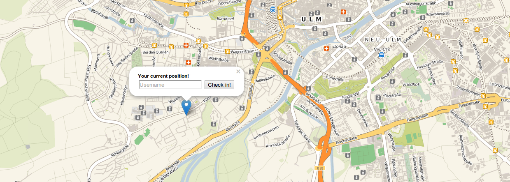
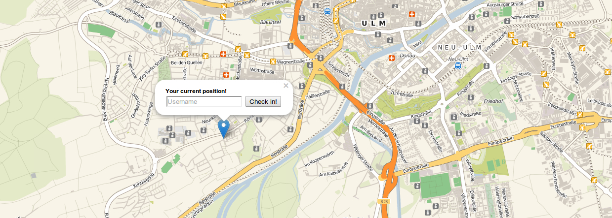
Falco Nogatz
Student @ Ulm University
Computer Science
Interests: web technologies and programming paradigms
Contact:
www: nogatz.net
twitter: @ulmerleben
github: fnogatz
IOException.de
selected nerd stuff by CS students @uulm
UlmAPI.de
datalove ♥ – a local group of open data enthusiasts
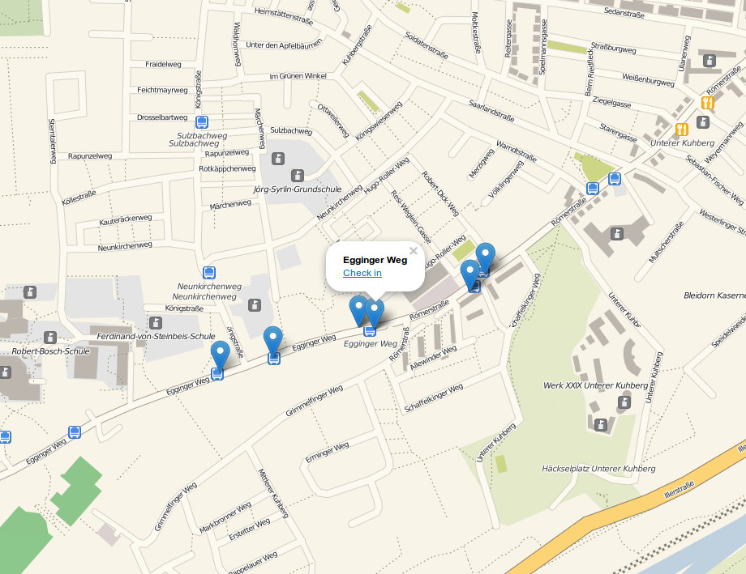
Implement a simple location-based service:
(here: venue = bus stop at City of Ulm, Germany)
Actually Foursquare is using exactly the same technologies: MongoDB as their database, Leaflet for beautiful maps and HTML5 to get the user's location. (But AJAX instead of Websockets.)
There are frequently blogging about their used technologies at engineering.foursquare.com.
Presentation can be found under
Complete Demo App can be found under
github.com/fnogatz/geospatial-demo
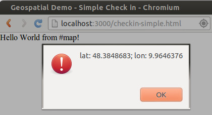
Node.js is a platform built on Chrome's JavaScript runtime for easily building fast, scalable network applications.
Node.js uses an event-driven, non-blocking I/O model that makes it lightweight and efficient, perfect for data-intensive real-time applications that run across distributed devices.

Why using JavaScript?

Node.js is a platform built on Chrome's JavaScript runtime for easily building fast, scalable network applications.
Node.js uses an event-driven, non-blocking I/O model that makes it lightweight and efficient, perfect for data-intensive real-time applications that run across distributed devices.
var server = require('http').createServer(function (req, res) {
res.writeHead(200, {'Content-Type': 'text/plain'});
res.end('Hello World');
});
server.listen(3000, function() {
console.log('Listening on port 3000');
});
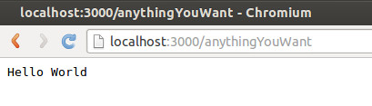
Serve static pages:
var express = require('express');
var app = express();
var server = require('http').createServer(app);
app.use(express.static(__dirname + '/static'));
// just an example route
app.get('/my/resource', function(req, res) {
res.send('Hello World');
});
server.listen(3000, function() {
console.log('Listening on port 3000');
});
Basic HTML file:
<!DOCTYPE html>
<html lang="de">
<head>
<meta charset="utf-8">
<title>Geospatial Demo - Simple Check in</title>
<link rel="stylesheet" href="/style.css">
</head>
<body>
<div id="map">Hello World from #map!</div>
</body>
</html>
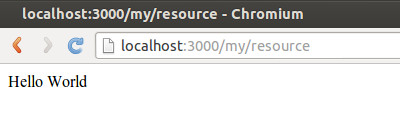
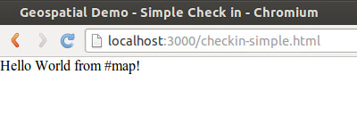
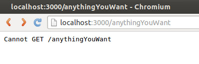
The Geolocation API defines a high-level interface to location information such as latitude and longitude. The API itself is agnostic of the underlying location information sources. Common sources of location information include GPS and location inferred from network signals such as IP address, RFID, WiFi and Bluetooth MAC addresses, and GSM/CDMA cell IDs, as well as user input. No guarantee is given that the API returns the device's actual location.
document.addEventListener('DOMContentLoaded', function() {
if (navigator.geolocation) {
navigator.geolocation.getCurrentPosition(
function positionFound(position) {
alert("lat: "+position.coords.latitude+"; \
lon: "+position.coords.longitude);
}
);
}
}, false);
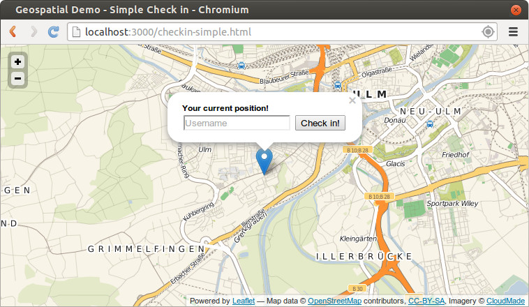
<!DOCTYPE html>
<html lang="de">
<head>
<meta charset="utf-8">
<title>Geospatial Demo - Simple Check in</title>
<script src="/checkin-simple.js"></script>
<link rel="stylesheet" href="/style.css">
<link rel="stylesheet"
href="http://cdn.leafletjs.com/leaflet-0.4.5/leaflet.css" />
<script
src="http://cdn.leafletjs.com/leaflet-0.4.5/leaflet.js">
</script>
</head>
<body>
<div id="map"></div>
</body>
</html>
map = L.map('map').setView(centerOfUlm, 13);
L.tileLayer(
'http://{s}.tile.cloudmade.com/bcaf462f30bd4c02a7378b1bc17dd6b6/997/256/{z}/{x}/{y}.png',
{
attribution: 'Map data © OpenStreetMap contributors, CC-BY-SA, Imagery © CloudMade'
}
).addTo(map);
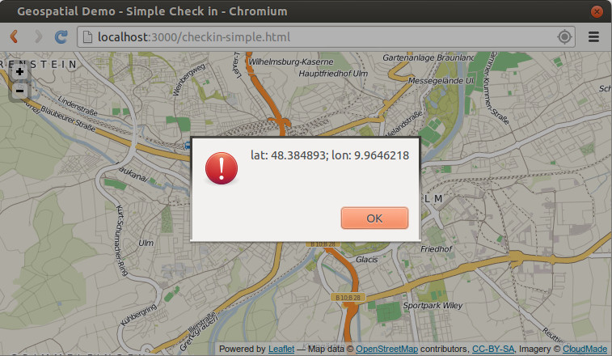
function setCurrentPosition(position) {
var coords = position.coords;
var msg = '<b>Your current position!</b>';
L.marker([coords.latitude, coords.longitude])
.addTo(map)
.bindPopup(msg)
.openPopup();
map.setView([coords.latitude, coords.longitude], 13);
}
...
if (navigator.geolocation) {
navigator.geolocation.getCurrentPosition(setCurrentPosition);
}
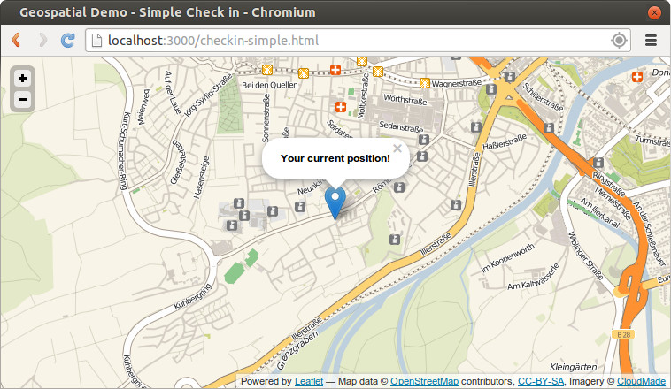
msg += '<form action="/checkin-simple.html" method="post">\
<input type="hidden" name="longitude"
value="'+coords.longitude+'" />\
<input type="hidden" name="latitude"
value="'+coords.latitude+'" />\
<input type="text" name="username"
placeholder="Username" required="true" />\
<input type="submit" value="Check in!" />\
</form>';
app.post('/checkin-simple.html', function(req, res) {
// do some magic here!
// e.g. create new database record
// or simply push new check-in to all visitors
res.redirect('checkin-simple.html');
});
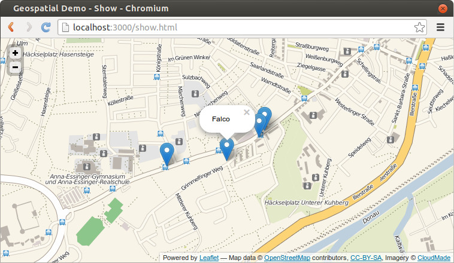
<!DOCTYPE html>
<html lang="de">
<head>
<meta charset="utf-8">
<title>Geospatial Demo - Show</title>
<script src="/show.js"></script>
<link rel="stylesheet" href="/style.css">
<link rel="stylesheet"
href="http://cdn.leafletjs.com/leaflet-0.4.5/leaflet.css" />
<script
src="http://cdn.leafletjs.com/leaflet-0.4.5/leaflet.js">
</script>
</head>
<body>
<div id="map"></div>
</body>
</html>
var map;
var centerOfUlm = [48.37616366164922,10.006818299883644];
document.addEventListener('DOMContentLoaded', function() {
map = L.map('map'usgin).setView(centerOfUlm, 13);
L.tileLayer('http://{s}.tile.cloudmade.com/bcaf462f30bd4c02a7378b1bc17dd6b6/997/256/{z}/{x}/{y}.png', {
attribution: 'Map data © <a href="http://openstreetmap.org">OpenStreetMap</a> contributors, <a href="http://creativecommons.org/licenses/by-sa/2.0/">CC-BY-SA</a>, Imagery © <a href="http://cloudmade.com">CloudMade</a>'
}).addTo(map);
}, false);
Simply copy & paste from simple-checkin.html
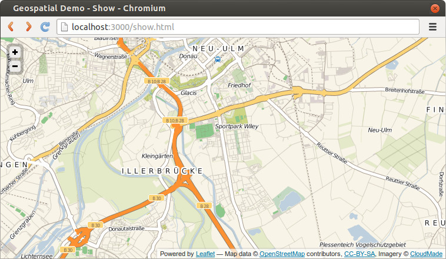
Socket.IO aims to make realtime apps possible in every browser and mobile device, blurring the differences between the different transport mechanisms. It's care-free realtime 100% in JavaScript.
var express = require('express');
var io = require('socket.io');
var app = express();
var server = require('http').createServer(app);
io = io.listen(server);
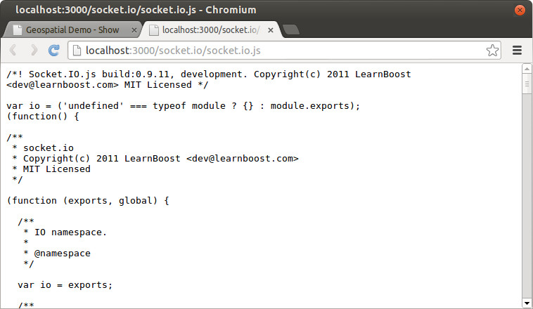
app.use(express.bodyParser());
app.post('/checkin-simple.html', function(req, res) {
io.sockets.emit('checkin', req.body);
res.redirect('checkin-simple.html');
});
var socket = io.connect('http://localhost');
socket.on('checkin', function(coords) {
L.marker([coords.latitude, coords.longitude])
.addTo(map)
.bindPopup(coords.username);
});
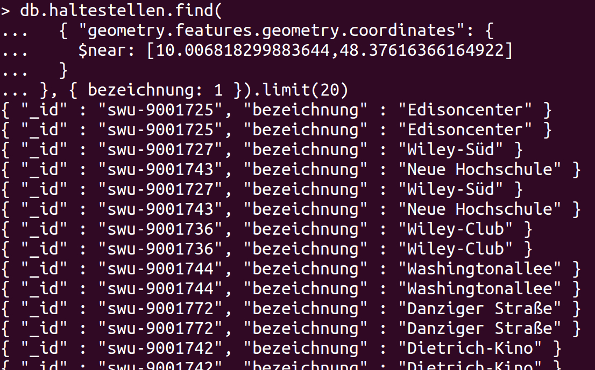
MongoDB is a scalable, high-performance, open source NoSQL database.

Let's have a look at one bus stop document for the City of Ulm (thanks to UlmApi.de for the data!)
{
"_id" : "swu-9001001",
"type" : "haltestelle",
"bezeichnung" : "Steinerne Brücke",
"ort" : "Ulm",
"geometry" : { ... },
"license" : {
"id" : "cc-by-sa-3.0",
"author" : "SWU Verkehr GmbH",
"publishedDate" : "2011-11-25",
"name" : "Creative Commons - Namensnennung-Weitergabe unter gleichen Bedingungen 3.0 Deutschland (CC BY-SA 3.0)",
"link" : "http://creativecommons.org/licenses/by-sa/3.0/de/"
}
}
{
"_id" : "swu-9001001",
...
"geometry" : {
"type" : "FeatureCollection",
"features" : [
{
"type" : "Feature",
"properties" : {
"olifid" : "100101",
"name" : "STEB - 01",
"heading" : 281
},
"geometry" : {
"type" : "Point",
"coordinates" : [
9.98820111111111,
48.3971741666667
]
}
},
...
]
},
"license" : { ... }
}
The mongo shell is an interactive JavaScript shell for MongoDB, and is part of all MongoDB distributions.
$ mongo MongoDB shell version: 2.2.2 connecting to: test >
> show dbs; geospatial-demo 0.203125GB
> use geospatial-demo;
> show collections; haltestellen system.indexes
> db.haltestellen.findOne();
{
"_id" : "swu-9001001",
"_rev" : "3-057933c4f16c23d416eee202cbff7c18",
"type" : "haltestelle",
"bezeichnung" : "Steinerne Brücke",
...
}Find all bus stops whose name contains "Uni" (SQL: LIKE)
> db.haltestellen.find(
{ bezeichnung: /Uni/ }
);
[data ...]
> db.haltestellen.find({ bezeichnung: /Uni/ }).length();
3
> db.haltestellen.find({ bezeichnung: /Uni/ },
{ bezeichnung: 1 });
{ "_id" : "swu-9001240", "bezeichnung" : "Universität Süd" }
{ "_id" : "swu-9001246", "bezeichnung" : "Uni West" }
{ "_id" : "swu-9001356", "bezeichnung" : "Universum Center" }
Get the number of features of "Universität Süd":
> var uniSued = db.haltestellen.findOne(
{ bezeichnung: "Universität Süd" },
{ bezeichnung: 1, "geometry.features": 1 }
);
> uniSued.geometry.features.length;
3
Get all bus stops with three features:
> db.haltestellen.find(
{ "geometry.features": { $size: 3 } },
{ bezeichnung: 1 }
);
{ "_id" : "swu-9001051", "bezeichnung" : "Staufenring" }
{ "_id" : "swu-9001232", "bezeichnung" : "Lehrer Tal" }
{ "_id" : "swu-9001240", "bezeichnung" : "Universität Süd" }
...
Query for near by bus stops:
> db.haltestellen.find(
{
"geometry.features.geometry.coordinates": {
$near: [10.006818299883644,48.37616366164922]
}
}, { bezeichnung: 1 }).limit(5)
Create a Geospatial Index:
> db.haltestellen.ensureIndex(
{ "geometry.features.geometry.coordinates": "2d" }
);
Save a check-in at the first feature of "Universität Süd" into the database:
db.haltestellen.update({
bezeichnung: "Universität Süd"
}, {
$push: {
checkins: {
feature: 0,
date: new Date()
}
}
});
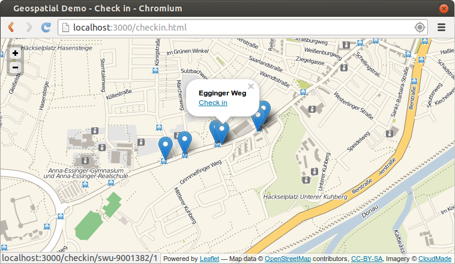
HTML: Simply copy & paste from show.html
JS: Change the getCurrentPosition Handler from checkin.js:
var map;
var centerOfUlm = [48.37616366164922,10.006818299883644];
document.addEventListener('DOMContentLoaded', function() {
map = L.map('map').setView(centerOfUlm, 13);
L.tileLayer('http://{s}.tile.cloudmade.com/bcaf462f30bd4c02a7378b1bc17dd6b6/997/256/{z}/{x}/{y}.png', {
attribution: 'Map data © <a href="http://openstreetmap.org">OpenStreetMap</a> contributors, <a href="http://creativecommons.org/licenses/by-sa/2.0/">CC-BY-SA</a>, Imagery © <a href="http://cloudmade.com">CloudMade</a>'
}).addTo(map);
if (navigator.geolocation) {
navigator.geolocation.getCurrentPosition(setCurrentPosition);
}
}, false);
if (navigator.geolocation) {
navigator.geolocation.getCurrentPosition(function(position) {
map.setView([
position.coords.latitude,
position.coords.longitude
], 13);
// send current location to server
// to request near by bus stops
var socket = io.connect('http://localhost');
socket.emit('coordinates', position.coords);
});
}
io.sockets.on('connection', function(socket) {
socket.on('coordinates', function(coords) {
// TODO: find near by bus stops
console.log(coords);
});
});
mongodb.MongoClient.connect(
"mongodb://localhost:27017/geospatial-demo",
function(err, db) {
...
db.collection('haltestellen').find({
"geometry.features.geometry.coordinates": {
$near: [coords.longitude, coords.latitude]
}
}).limit(5).toArray(function(err, haltestellen) {
// send result to client via Socket.IO!
socket.emit('haltestellen', haltestellen);
});
}
);
socket.on('haltestellen', function(haltestellen) {
haltestellen.forEach(function(haltestelle) {
haltestelle.geometry.features.forEach(function(feature, no) {
var msg = '<b>'+haltestelle.bezeichnung+'</b><br /> \
<a href="/checkin/'+haltestelle._id+'/'+no+'">Check in</a>';
L.marker([
feature.geometry.coordinates[1],
feature.geometry.coordinates[0]
]).addTo(map).bindPopup(msg);
});
});
});
app.get('/checkin/:haltestelle/:no', function(req, res) {
res.redirect('checkin.html');
db.collection('haltestellen').update({
_id: req.params.haltestelle
}, {
$push: {
checkins: {
feature: req.params.no,
date: new Date()
// user: req.params.username and so on...
}
}
}, function() {});
});
db.collection('haltestellen').findOne({
_id: req.params.haltestelle
}, function(err, haltestelle) {
io.sockets.emit('checkin', {
longitude: haltestelle.geometry.features[req.params.no]
.geometry.coordinates[0],
latitude: haltestelle.geometry.features[req.params.no]
.geometry.coordinates[1],
username: haltestelle.bezeichnung
});
});
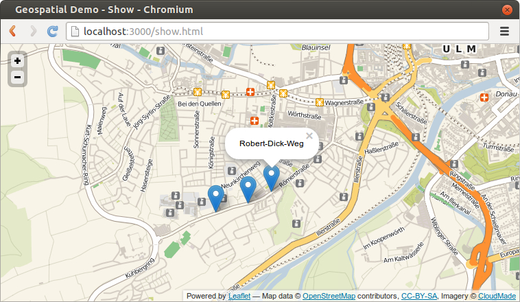
Presentation can be found under
Complete Demo App can be found under
github.com/fnogatz/geospatial-demo